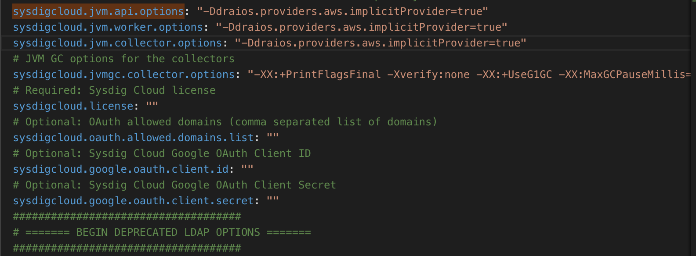

AWS: Integrate AWS Account and CloudWatch Metrics (Optional)
When a Sysdig agent is installed in an AWS environment, the Sysdig backend (either SaaS or On-Premises) can collect both general metadata and various types of CloudWatch metrics.
There are three ways to integrate an AWS account into Sysdig:
By manually entering an AWS access key and secret key, and manually managing/rotating them as needed (SaaS or On-Prem), or
By passing a parameter that allows Sysdig to autodetect an AWS ECS role and its permissions, passing an "implicit key" (On-Prem only).
The implicit option requires no manual key rotation as AWS handles those permissions behind the scenes.
Using AWS Role delegation.
The Sysdig Monitor UI includes links to help easily integrate CloudWatch metrics into Sysdig Monitor, as described below.
Two Entry Points in the Sysdig UI
The Sysdig interface prompts you to perform this integration from two different places: the Welcome Wizard or the administrator's Settings menu.
Access from the Welcome Wizard
When first logging into the Sysdig Monitor UI, the Welcome Wizard includes an option to integrate your AWS account to collect CloudWatch metrics.
Note
If you want to use an implicit key, you should skip this page in the Wizard. See Implicit Key Option for details.
 |
Access from the Settings Menu
Once an agent has been installed, log in to Sysdig Monitor or Sysdig Secure as administrator to perform integration steps or review/modify existing AWS settings.
Log in to Sysdig Monitor or Sysdig Secure as administrator and select
Settings.
Choose AWS.
An AWS page showing manual key integration, with access key and secret key fields displayed.
NOTE: If there is no AWS integration yet then click on
ADD YOUR AWS ACCOUNTand provide the access key and secret key"
Integrate AWS Account Manually
Have your AWS EC2 account details available. Integration begins on the AWS side and is completed in the Sysdig Monitor UI.
In AWS
Create an IAM Policy for Sysdig Access
Note
You could use the existing IAMReadOnly policy instead, but creating a Sysdig-specific policy provides more granular access control, the activity can be easily distinguished in CloudTrail, and it is considered best practice.
In AWS, select IAM and create a policy to be used for Sysdig. (Sample policy name: SysdigMonitorPolicy.)
Using the JSON editor view, copy/paste the Sysdig-specific policy code into the new policy and save it.
You can review the policy in the Visual Editor.
When reviewing the completed policy in the Visual editor, you should see something like:
 |
Create an IAM User and Grant Programmatic Access
Use an existing IAM user, or (best practice) create a specific IAM user for the Sysdig Backend to programmatically access CloudWatch and use its data.
In the IAM Console, add a User.
Select AWS Access Type: Programmatic Access.
Select 'Attach existing policies directly', search for and then select the newly created policy (Sample policy name: SysdigMonitorPolicy.)
Select 'Create User' option.
Copy and save the resulting access key and secret key (Note: the Secret is only displayed once, so make sure to download the credentials file or store the key securely that you can reference again.)
In the Sysdig Monitor UI
Enter the Access and Secret Key
Log in to Sysdig Monitor or Sysdig Secure as the administrator and select Settings.
Select AWS.
Add an account by entering the
User Access KeyandSecret Keyand clickingSave.The
Credentialswill be listed with aStatusofOKchecked.
Note
Should an Error occur instead, double-check the credentials entered. Mis-typing is the most common cause of errors.
Enable CloudWatch Integration
Navigate to the AWS page in the Sysdig Monitor UI, if you are not already there.
Toggle the
CloudWatch Integration StatustoEnabled.Sysdig Monitor will poll the CloudWatch API every five minutes. Note that this incurs additional charges from AWS.
Refetch Credentials
If the integrated AWS account changes on the AWS side, an Error will be listed in the Credentials Status on the Settings > AWS page.
Use the Refetch Now button to re-establish the integration.
Integrate AWS Account Using the Implicit Key (On-Prem Only)
If Sysdig is installed in an EC2 instance, you can take advantage of the existing EC2 IAM role of that instance. This can simplify administration, as you do not have to manually rotate public and private keys provided to the Sysdig backend.
Use Implicit Key
Prerequisites
Have your on-premises Sysdig platform installed in an AWS EC2 instance that has a proper IAM role.
Note
For this option, you cannot use the AWS Integration step in the Welcome Wizard.
To enable implicit key, you must set the following parameter:
-Ddraios.providers.aws.implicitProvider=true
Note
Use the parameter either during initial installation, or, if you already entered keys manually, to switch to an implicit key.
If switching, you must then restart the api, worker, and collector components in the backend.
In the Settings > AWS page, the former credentials will be overwritten it will show implicit key.
Enablement steps depend on whether you are using Kubernetes or Replicated as your orchestrator.
Kubernetes
Edit the
config.yamlto add to the following entries (in theDatasection ofconfig.yaml):sysdigcloud.jvm.api.options: sysdigcloud.jvm.worker.options: sysdigcloud.jvm.collector.options:
 If you are switching from manual to implicit keys, you must also restart the API, worker, and collector components.
See To Make Configuration Changes for details.
Enable Cloudwatch integration in the Sysdig UI.
Replicated
In the Replicated Management Console, enter
-Ddraios.providers.aws.implicitProvider=trueinSysdig Cloud application JVM options.If you have other settings in that field, separate the entries with a space.
See also Replicated Advanced Settings .
If you are switching from manual keys, you must restart the backend components from the Replicated Management Console.
Changing the AWS Services that are Polled
Sysdig is designed to collect metadata for particular AWS services, which are reflected in the IAM policy code.
The services are:
DynamoDB
EC2 hosts
ECS
Elasticache
RDS
SQS
When you implement the code and integration steps as described above, it will trigger two types of collection: first the metadata for each service is collected, and then Sysdig will poll for the metrics about the metadata returned. So, if the service is not enabled in your environment, no metadata (and no metrics) are collected about it. If it is enabled, but you do not want to poll metrics, then delete the lines of code related to that service from the IAM policy. This will avoid potential unwanted AWS API requests and potential AWS charges.
See also AWSin the Metrics Dictionary.
Security Groups
If you have an on-premises Sysdig Backend, and have restricted outbound security groups, you may need to allow HTTPS & DNS access in order for the Sysdig Backend components to make connection to the Amazon APIs. As Amazon API endpoints are referenced by name and have a large number of IP's, this may need to be full 0.0.0.0/0 outbound access for HTTPS & DNS.
If you need to filter just to Amazon IP ranges, you can use the following as a guide: https://docs.aws.amazon.com/general/latest/gr/aws-ip-ranges.html
Retrieving CloudWatch Data for Particular AWS Regions
To enable metrics collection from only certain AWS regions in your environment, it is necessary to open a ticket with Sysdig Support. See Contact Support for details.
Related Information
For information on the resulting AWS services visible in Sysdig Monitor, see the AWS-related information in the Metrics Dictionary (also available from within the Sysdig Monitor UI).
For information on how licensing affects AWS service views, see AWS Services Licensing.